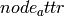
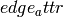

attr_sparse_matrix¶
- attr_sparse_matrix(G, edge_attr=None, node_attr=None, normalized=False, rc_order=None, dtype=None)[source]¶
Returns a SciPy sparse matrix using attributes from G.
If only
 is passed in, then the adjacency matrix is constructed.
is passed in, then the adjacency matrix is constructed.Let A be a discrete set of values for the node attribute . Then the elements of A represent the rows and columns of the constructed matrix. Now, iterate through every edge e=(u,v) in
and consider the value
of the edge attribute . If ua and va are the values of the
node attribute for u and v, respectively, then the value of
the edge attribute is added to the matrix element at (ua, va).Parameters : G : graph
The NetworkX graph used to construct the NumPy matrix.
edge_attr : str, optional
Each element of the matrix represents a running total of the specified edge attribute for edges whose node attributes correspond to the rows/cols of the matirx. The attribute must be present for all edges in the graph. If no attribute is specified, then we just count the number of edges whose node attributes correspond to the matrix element.
node_attr : str, optional
Each row and column in the matrix represents a particular value of the node attribute. The attribute must be present for all nodes in the graph. Note, the values of this attribute should be reliably hashable. So, float values are not recommended. If no attribute is specified, then the rows and columns will be the nodes of the graph.
normalized : bool, optional
If True, then each row is normalized by the summation of its values.
rc_order : list, optional
A list of the node attribute values. This list specifies the ordering of rows and columns of the array. If no ordering is provided, then the ordering will be random (and also, a return value).
Returns : M : SciPy sparse matrix
The attribute matrix.
ordering : list
If
 was specified, then only the matrix is returned.
However, if was None, then the ordering used to construct
the matrix is returned as well.
was specified, then only the matrix is returned.
However, if was None, then the ordering used to construct
the matrix is returned as well.Other Parameters: dtype : NumPy data-type, optional
A valid NumPy dtype used to initialize the array. Keep in mind certain dtypes can yield unexpected results if the array is to be normalized. The parameter is passed to numpy.zeros(). If unspecified, the NumPy default is used.
Examples
Construct an adjacency matrix:
>>> G = nx.Graph() >>> G.add_edge(0,1,thickness=1,weight=3) >>> G.add_edge(0,2,thickness=2) >>> G.add_edge(1,2,thickness=3) >>> M = nx.attr_sparse_matrix(G, rc_order=[0,1,2]) >>> M.todense() matrix([[ 0., 1., 1.], [ 1., 0., 1.], [ 1., 1., 0.]])
Alternatively, we can obtain the matrix describing edge thickness.
>>> M = nx.attr_sparse_matrix(G, edge_attr='thickness', rc_order=[0,1,2]) >>> M.todense() matrix([[ 0., 1., 2.], [ 1., 0., 3.], [ 2., 3., 0.]])
We can also color the nodes and ask for the probability distribution over all edges (u,v) describing:
Pr(v has color Y | u has color X)>>> G.node[0]['color'] = 'red' >>> G.node[1]['color'] = 'red' >>> G.node[2]['color'] = 'blue' >>> rc = ['red', 'blue'] >>> M = nx.attr_sparse_matrix(G, node_attr='color', normalized=True, rc_order=rc) >>> M.todense() matrix([[ 0.33333333, 0.66666667], [ 1. , 0. ]])
For example, the above tells us that for all edges (u,v):
Pr( v is red | u is red) = 1/3 Pr( v is blue | u is red) = 2/3
Pr( v is red | u is blue) = 1 Pr( v is blue | u is blue) = 0
Finally, we can obtain the total weights listed by the node colors.
>>> M = nx.attr_sparse_matrix(G, edge_attr='weight', node_attr='color', rc_order=rc) >>> M.todense() matrix([[ 3., 2.], [ 2., 0.]])
Thus, the total weight over all edges (u,v) with u and v having colors:
(red, red) is 3 # the sole contribution is from edge (0,1) (red, blue) is 2 # contributions from edges (0,2) and (1,2) (blue, red) is 2 # same as (red, blue) since graph is undirected (blue, blue) is 0 # there are no edges with blue endpoints